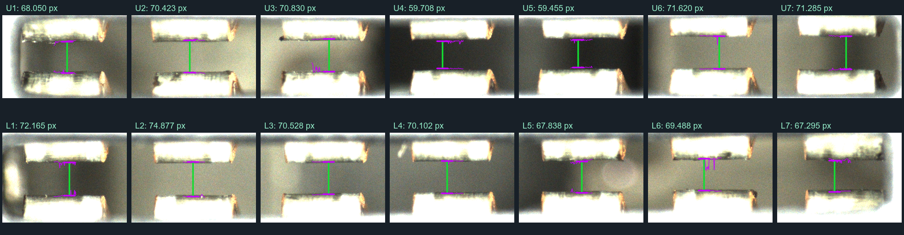
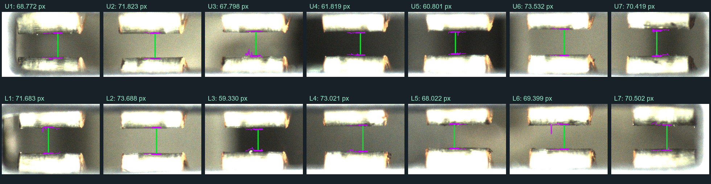
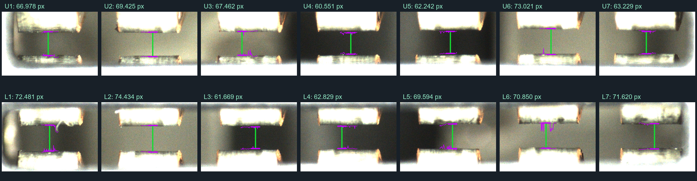
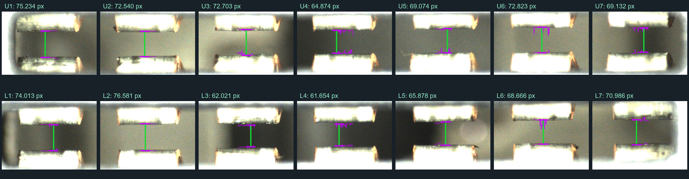
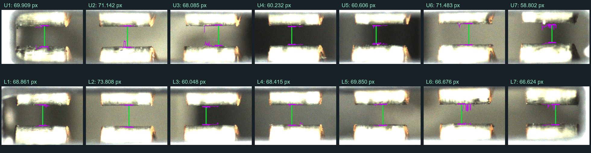
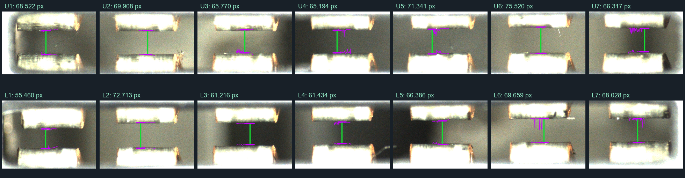

单位：像素 px。上排从左到右 U1–U7，下排从左到右 L1–L7；测量相对金属凸片之间的竖直间距。原 demo 算法，49 列取中位数，9 px 高斯平滑，上下暗侧比例 3%。上下排分别做模板平移定位，测量使用未缩放的原图。
逐图放大查看测量边缘 · 主要结果 CSV · 最大梯度对照 CSV · 有效列数及 MAD 明细
两种模式的算法错误合计：0。获得读数不等于尺寸合格；没有毫米标定、人工真值及公差。不同图之间的极差包含工件差异、姿态和光照影响，不能直接解释为测量重复性。
| 图片 | U1 | U2 | U3 | U4 | U5 | U6 | U7 | L1 | L2 | L3 | L4 | L5 | L6 | L7 |
|---|---|---|---|---|---|---|---|---|---|---|---|---|---|---|
| 1.png | 68.050 | 70.423 | 70.830 | 59.708 | 59.455 | 71.620 | 71.285 | 72.165 | 74.877 | 70.528 | 70.102 | 67.838 | 69.488 | 67.295 |
| 2.png | 68.772 | 71.823 | 67.798 | 61.819 | 60.801 | 73.532 | 70.419 | 71.683 | 73.688 | 59.330 | 73.021 | 68.022 | 69.399 | 70.502 |
| 3.png | 66.978 | 69.425 | 67.462 | 60.551 | 62.242 | 73.021 | 63.229 | 72.481 | 74.434 | 61.669 | 62.829 | 69.594 | 70.850 | 71.620 |
| 4.png | 75.234 | 72.540 | 72.703 | 64.874 | 69.074 | 72.823 | 69.132 | 74.013 | 76.581 | 62.021 | 61.654 | 65.878 | 68.666 | 70.986 |
| 5.png | 69.909 | 71.142 | 68.085 | 60.232 | 60.606 | 71.483 | 58.802 | 68.861 | 73.808 | 60.048 | 68.415 | 69.850 | 66.676 | 66.624 |
| 6.png | 68.522 | 69.908 | 65.770 | 65.194 | 71.341 | 75.520 | 66.317 | 55.460 | 72.713 | 61.216 | 61.434 | 66.386 | 69.659 | 68.028 |
| 极差 | 8.256 | 3.114 | 6.933 | 5.486 | 11.886 | 4.037 | 12.483 | 18.553 | 3.868 | 11.198 | 11.587 | 3.972 | 4.173 | 4.996 |
取边复核：5.png 的 U7 仍对灰色背景较敏感；6.png 的 L1 读数较小，图中上侧凸片明显向下延伸；4.png 的 U1 在两种判边方式下差异明显。这些值是当前算法读数，尚未用实体真值验证。首轮发现 5.png 的 L6 上边缘追入灰色背景，现已统一收窄搜索窗；首轮配置及数据保存在 diagnostic_broad_windows 目录，可追溯对照。
紫色线表示原算法找到的上下边缘，绿色线表示间距。下面每张局部总览均为上排 U1–U7、下排 L1–L7。反光及灰色背景可能影响暗侧取边，需结合原图核对。





